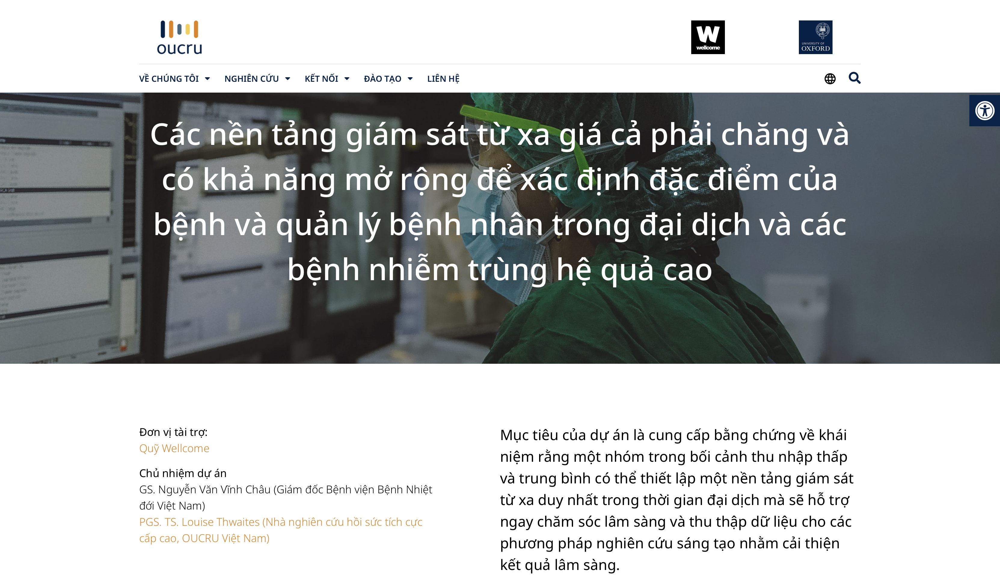

Tin nổi bật
OUCRU | Nền tảng giám sát từ xa và khả năng mở rộng để xác định đặc điểm của bệnh và quản lý bệnh nhân
Dự án hợp tác giữa iParamed, Đơn vị nghiên cứu lâm sàng Đại học Oxford (OUCRU) và Bệnh viện Bệnh nhiệt đới trong Đại dịch Covid-19
Đọc thêm →